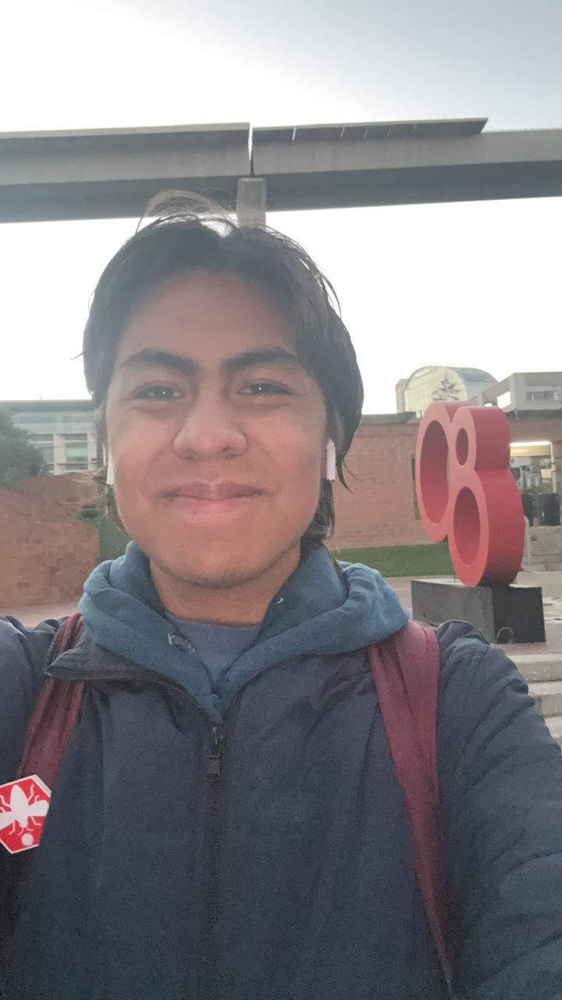

MediSync
Un dispensador inteligente diseñado para brindar alivio cognitivo a pacientes con enfermedades crónicas.
MediSync automatiza por completo la entrega de medicamentos: almacena, separa y dispensa la dosis exacta en el momento preciso.
Integra alertas visuales y sonoras, junto con conectividad IoT que permite enviar el historial de adherencia directamente al médico o familiares.
Más que un pastillero, es el compañero que te ayuda a no fallar nunca en tu tratamiento.
Miembros del equipo

Jesús Velázquez
Nacido en CDMX, Jesús Velázquez es estudiante de la carrera de
Mecatrónica y Sistemas Ciberfísicos en la Universidad Iberoamericana.
Forma parte de la sociedad de alumnos de su carrera “Jarvis” desempeñando
el rol de portavoz. Es miembro del equipo representativo de atletismo
en la rama de fondo. Le apasiona la ciencia ficción y los libros de fantasía.
Valerie Santos
Estudiante de Ingeniería Mecatrónica, apasionada
por aprender técnicas de conformado de materiales y carpintería. En su
tiempo libre disfruta leer romance y bordar.
Además, considera un verdadero hobby poder hablar sin parar con las
personas de su confianza, porque las buenas conversaciones también
forman parte de su energía e inspiración.

Salomon Dabbah
Nacido en CDMX, Salomon Dabbah es estudiante de Ingeniería en
Mecatrónica y Sistemas Ciberfísicos en la Universidad Iberoamericana.
Se dedica principalmente al desarrollo de software, con experiencia
complementaria en hardware, buscando integrar ambos conocimientos en su trabajo.
Fundador de una empresa LoopOff, le interesan los negocios, el desarrollo de proyectos propios.
Disfruta el deporte y el cuidado de su salud.

Jesús Velázquez
Nacido en CDMX, Jesús Velázquez es estudiante de la carrera de Mecatrónica y Sistemas Ciberfísicos en la Universidad Iberoamericana. Forma parte de la sociedad de alumnos de su carrera “Jarvis” desempeñando el rol de portavoz. Es miembro del equipo representativo de atletismo en la rama de fondo. Le apasiona la ciencia ficción y los libros de fantasía.
Valerie Santos
Estudiante de Ingeniería Mecatrónica, apasionada por aprender técnicas de conformado de materiales y carpintería. En su tiempo libre disfruta leer romance y bordar. Además, considera un verdadero hobby poder hablar sin parar con las personas de su confianza, porque las buenas conversaciones también forman parte de su energía e inspiración.
Salomon Dabbah
Nacido en CDMX, Salomon Dabbah es estudiante de Ingeniería en Mecatrónica y Sistemas Ciberfísicos en la Universidad Iberoamericana. Se dedica principalmente al desarrollo de software, con experiencia complementaria en hardware, buscando integrar ambos conocimientos en su trabajo. Fundador de una empresa LoopOff, le interesan los negocios, el desarrollo de proyectos propios. Disfruta el deporte y el cuidado de su salud.